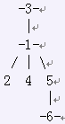

农夫约翰的奶牛住在N (2 <= N <= 200,000)片不同的草地上，标号为1到N。恰好有N-1条单位长度的双向道路，用各种各样的方法连接这些草地。而且从每片草地出发都可以抵达其他所有草地。也就是说，这些草地和道路构成了一种叫做树的图。输入包含一个详细的草地的集合，详细说明了每个草地的父节点P_i (0 <= P_i <= N)。根节点的P_i == 0, 表示它没有父节点。因为奶牛建立了1到K一共K (1 <= K <= N/2)个政党。每只奶牛都要加入某一个政党，其中，
第i只奶牛属于第A_i (1 <= A_i <= K)个政党。而且每个政党至少有两只奶牛。
这些政党互相吵闹争。每个政党都想知道自己的“范围”有多大。其中，定义一个政党的范围是这个政党离得最远的两只奶牛（沿着双向道路行走）的距离。
比如说，记为政党1包含奶牛1，3和6，政党2包含奶牛2，4和5。这些草地的连接方式如下图所
示（政党1由-n-表示）：

政党1最大的两只奶牛的距离是3（也就是奶牛3和奶牛6的距离）。政党2最大的两只奶牛的距离是2（也就是奶牛2和4，4和5，还有5和2之间的距离）。
帮助奶牛们求出每个政党的范围。